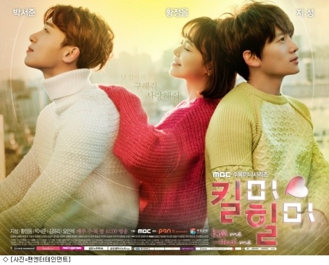

내가 좋아하는 드라마 5가지
| No. | Name | Value |
|---|---|---|
| 1 | 킬미힐미 | 5 |
| 2 | 푸른 바다의 전설 | 4.5 |
| 3 | 부암동 복수자들 | 5 |
| 4 | 백일의 낭군님 | 4.5 |
| 5 | 미스터 기간제 | 4.5 |
1.킬미힐미
킬미힐미는 다중인격인 재벌 3세와 그의 레지던트의 이야기를 담았다.
나는 이 드라마 속에서 지성의 섬세한 연기에 감동을 받았다.
또한 각각의 인격이 가진 이야기도 흥미로웠고 그들이 가진 상처를 치료해나가는 과정에서 힘을 얻을 수 있었다.
2.푸른 바다의 전설

푸른 바다의 전설은 인어와 한 남자의 이야기이다.
극 중에서 전지현 배우님의 연기가 너무 귀엽고 웃음이 나와서 가볍게 보기에 아주 적합하다.
그렇지만 인어와 남자의 관계에서 아련한 포인트가 있기 때문에 웃음도 있고 감동도 있는 작품이라 생각한다.
3.부암동 복수자들

이 드라마는 내가 많은 사람들에게 추천하는 드라마다.
왜냐하면 이는 정말 가볍게 즐기기에 안성맞춤이기 때문이다.
평범한 사람들이 모여 복수 품앗이를 한다는 사실이 통쾌하기도 하면서 웃음을 자아낸다.
또한 각각의 캐릭터가 재미있고 그들 간의 시너지가 드라마를 더 흥미진진하게 한다.
4.백일의 낭군님

이 드라마는 계절의 특성을 잘 살렸기 때문에 영상이 아주 예뻤다.
두 주인공의 케미도 완벽했고, 조연배우들과의 관계에서 톡톡 튀는 재미를 발견할 수 있었다.
극의 주제가 마냥 밝지는 않으나 각각의 캐릭터들이 하는 대사가 맛깔나기 때문에 심각하지만은 않게 즐길 수 있었다.
또한 많은 반전이 있기 때문에 굉장히 흥미롭다.
5.미스터 기간제

이 드라마는 정말 치밀하게 짜여졌다고 생각한다.
각각의 캐릭터가 모두 독보적인 살인의 명분을 가졌다.
그렇기 때문에 극의 후반부까지 손에 땀을 쥐고 이야기를 지켜보게 된다.
한번 보기 시작한다면 멈출 수 없을 것이다.